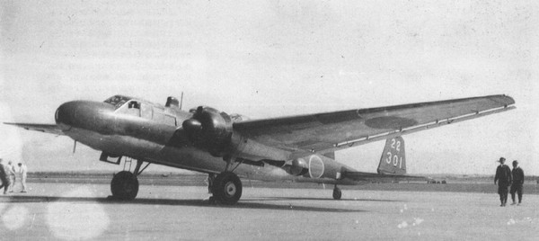

Дальние двухмоторные бомбардировщики-торпедоносцы Mitsubishi G4M при относительно небольшой бомбовой нагрузке в 1000 кг отличались огромной дальностью полета порядка 6000 км, что сравнимо с дальностью полета стратегических бомбардировщиков.
Из-за необходимости соблюдения Вашингтонского морского соглашения Япония сильно отставала в строительстве флота, поэтому, чтобы защититься от кораблей вероятного противника, и было сформулировано требование 10-Си на создание двухмоторного бомбардировщика-торпедоносца большого радиуса действия.
В качестве силовой установки использовались два двигателя мощностью 1530 л.с. Впервые в истории японской авиации были применены убирающееся шасси.
Стремясь всеми силами сконструировать как можно более скоростной и дальнодействующий бомбардировщик, конструкторы отказались от защиты топливных баков, считая, что G4M1 смогут уходить от истребителей на достаточно высокой скорости. Надежды конструкторов не оправдались - крылья, в которых были расположены топливные баки, легко загорались даже при незначительных повреждениях, а истребители, которым не составляло труда догнать G4M1, Союзники имели на вооружении уже в начале войны.Всего было построено 1170 G4M1.